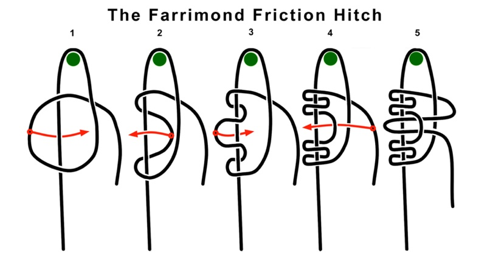

NUDOS DE SUJECCION
Los nudos de sujeción son herramientas versátiles que se utilizan para asegurar objetos, crear puntos de anclaje o garantizar que una cuerda permanezca fija en su lugar. Dependiendo del contexto (escalada, navegación, acampada, trabajos de construcción, etc.), existen diferentes tipos de nudos de sujeción. A continuación, se presentan algunos de los más comunes:
NUDO BALLESTRINQUE
- El nudo ballestrinque es uno de los nudos más versátiles y utilizados para fijar una cuerda a un poste, barra o anilla. Su sencillez y rapidez de ejecución lo convierten en una elección frecuente tanto en situaciones cotidianas como en actividades especializadas como náutica, escalada, acampada o trabajos en altura.
NUDO DE FRENO O ITALIANO
- El nudo italiano, también conocido como nudo dinámico o Munter Hitch, es un nudo muy versátil que se utiliza principalmente en escalada, montañismo y rescate. Su característica principal es permitir el control de la fricción en una cuerda, lo que lo convierte en una herramienta ideal para aseguramiento o descenso controlado en situaciones de emergencia.

NUDO PRUSIK
- El nudo Prusik es un nudo de fricción ampliamente utilizado en actividades como escalada, montañismo, espeleología, arboricultura y rescate. Su principal característica es que se desliza fácilmente sobre una cuerda principal cuando no está bajo tensión, pero se bloquea de manera segura cuando se aplica carga. Esto lo hace ideal para sistemas de autoaseguramiento y ascenso por cuerdas.